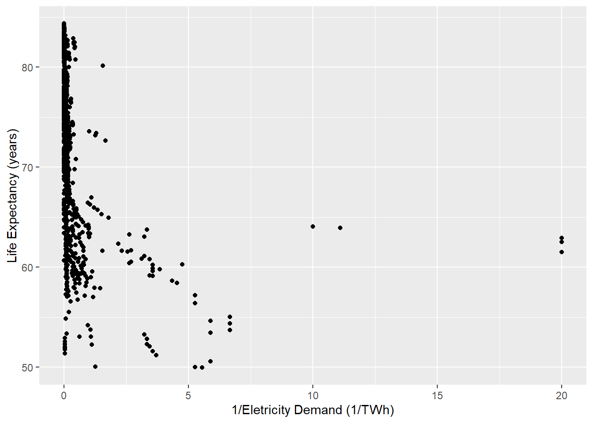
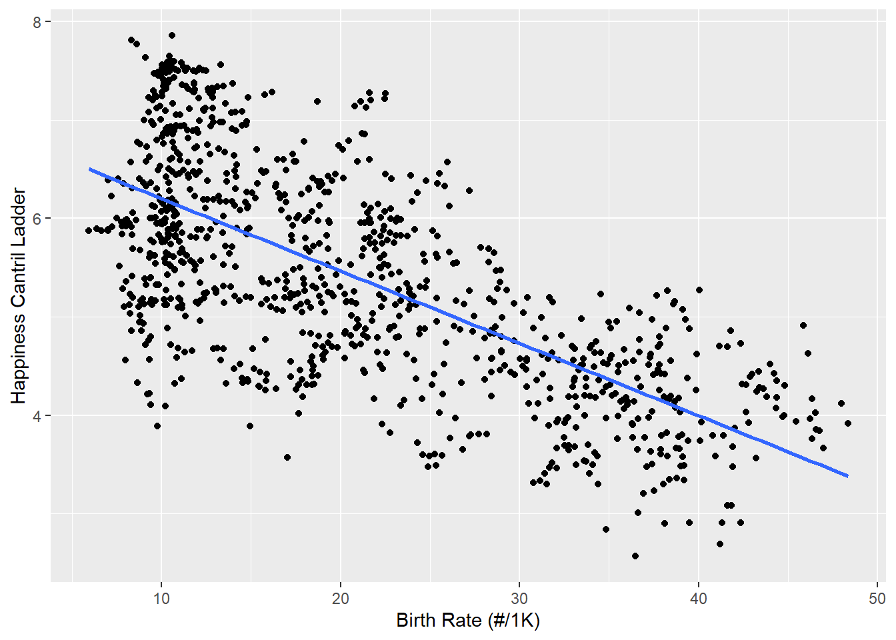
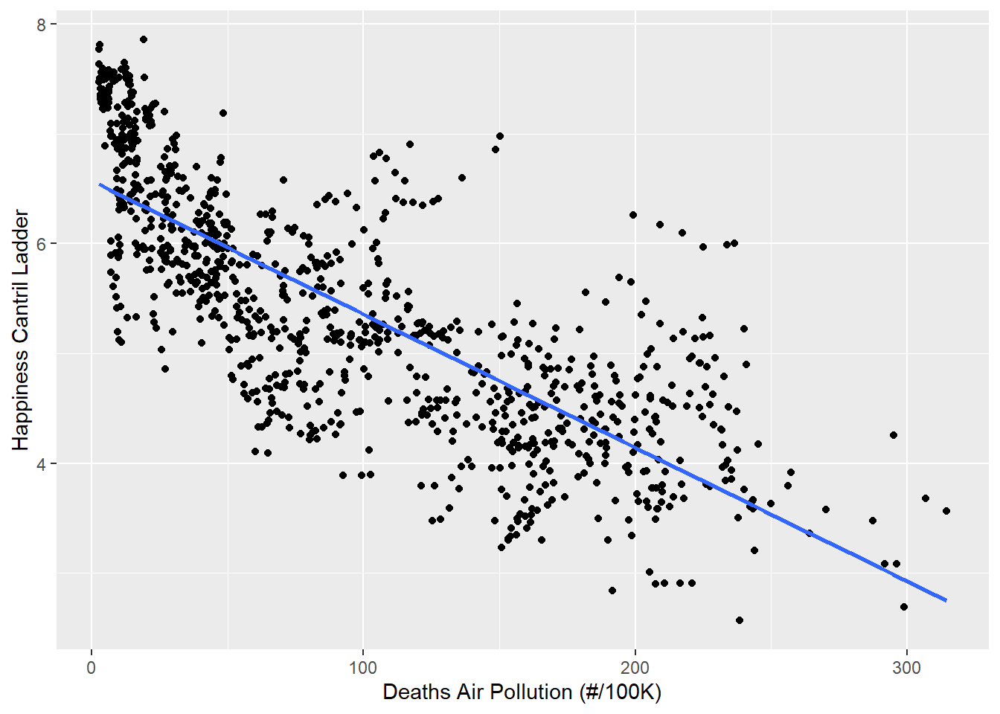
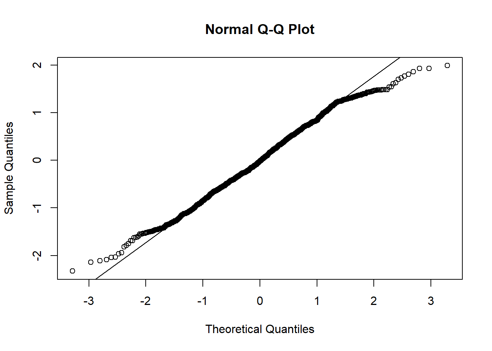
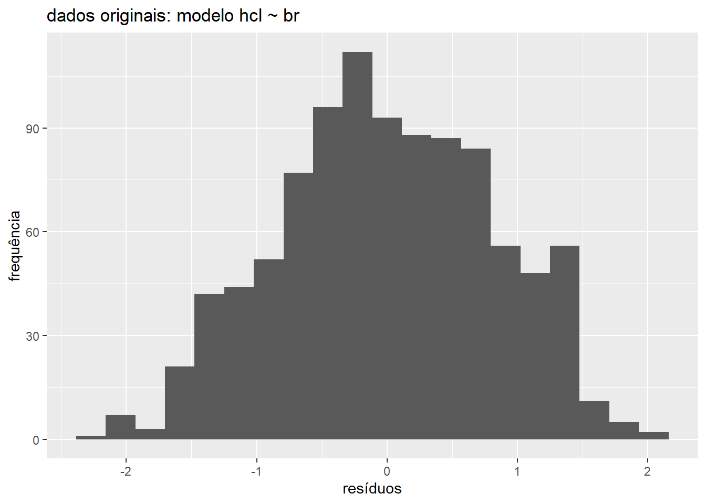
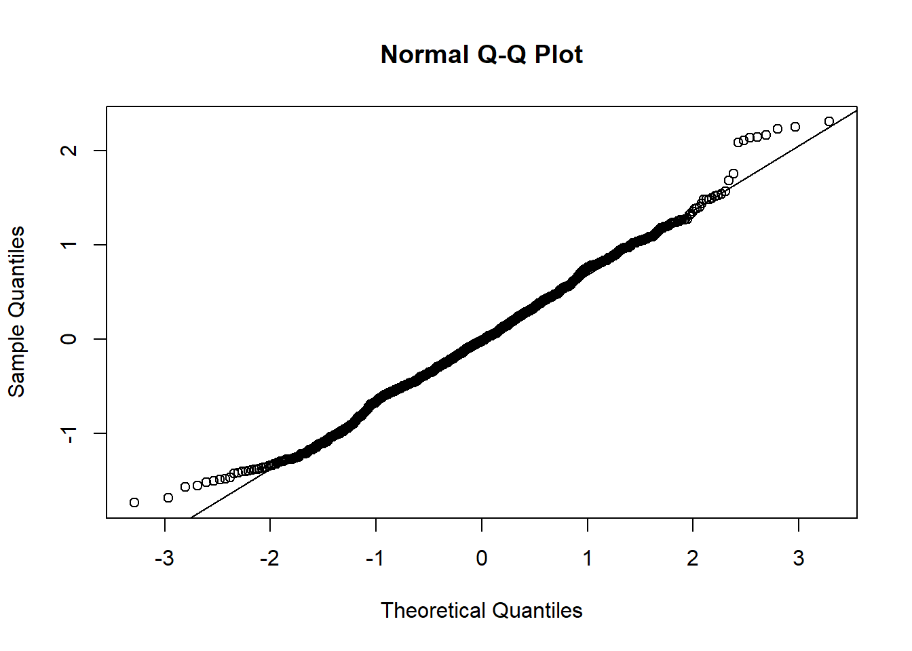
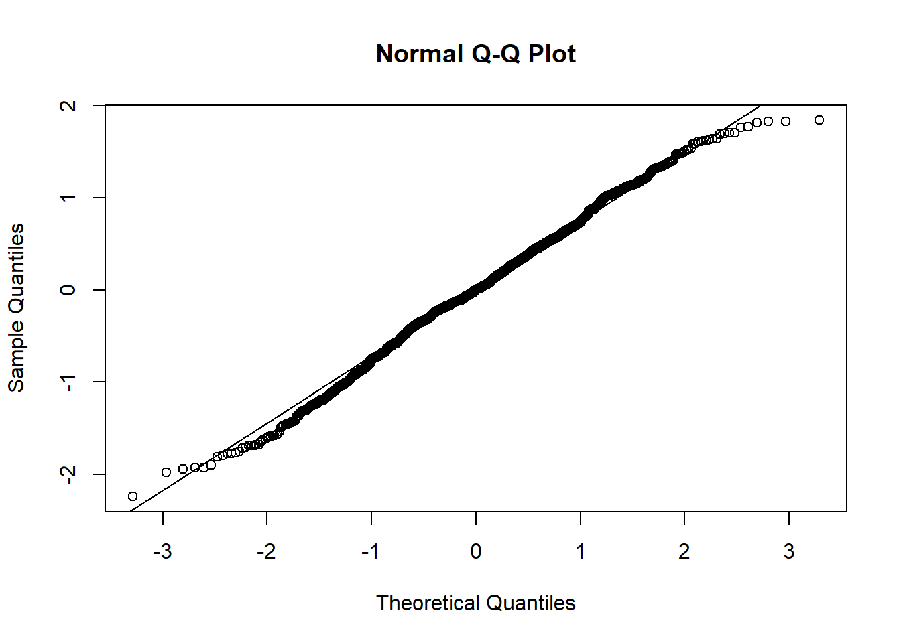

Os dados disponíveis no arquivo data/owid.csv foram obtidos do portal Our World in Data, cuja missão é publicar pesquisas e dados relacionados a grandes problemas mundiais como pobreza, doenças, fome, mudanças climáticas, guerras, riscos existenciais e desigualdade.
Os dados originais foram pré-processados no sentido de remover observações faltantes. Há um total de 985 observações coletadas para 21 variáveis:
continent: continente em que está o país
entity: nome do país
code: código do país
year: ano
birth_rate: número de nascimentos com vida por 1.000 habitantes na população.
child_mortality: mortes de crianças menores de 5 anos de idade (% nascimentos)
co2_emission_pc: emissões anuais de CO2 per capita (t/pessoa)
deaths_solid_fuels_pollution: mortes resultantes de poluição por queima de combustíveis sólidos em ambientes internos (/100K)
deaths_particulate_pollution: mortes resultantes de poluição por material particulado em ambientes externos (/100K)
deaths_air_pollution: mortes resultantes de poluição do ar ambiente (/100K)
deaths_ozone: mortes resultantes de poluição por ozônio em ambientes externos (%)
deaths_sanitation: mortes resultantes de falta ou precariedade de acesso a saneamento básico (100K)
electricity_demand: geração total de eletricidade anual, ajustada por importação e exportação de eletricidade (TWh)
energy_use_pc: consumo de energia médio anual (eletricidade, transporte, aquecimento, preparo de alimentos) per capita (KWh/pessoa)
expected_schooling: expectativa do número de anos de educação que uma criança que entra no sistema escolar deve receber
happiness_cantril_ladder: nível de felicidade médio populacional (0-10)
gdp_pc: produto interno bruto per capita ($ internacional, referência 2017)
life_expectancy: expectativa de vida no nascimento (anos)
milk_consumption_pc: consumo de leite médio anual per capita (kg)
no_water: população sem acesso a fontes seguras de água (encanada, poços, fontes, chuva e envasada) (%)
urban_population_percent: população habitante de áreas urbanas (% população total)
Análise Exploratória de Dados
Conduza a análise exploratória da massa de dados owid, a fim de compreender suas características principais.
Voltaremos a utilizar essa massa de dados em atividades futuras.
continent country_code entity year
Africa :293 Length:985 Length:985 Min. :2011
Asia :240 Class :character Class :character 1st Qu.:2014
Europe :280 Mode :character Mode :character Median :2016
North America: 95 Mean :2016
Oceania : 14 3rd Qu.:2018
South America: 63 Max. :2019
birth_rate child_mortality co2_emission_pc
Min. : 5.92 Min. : 0.200 Min. : 0.02473
1st Qu.:11.20 1st Qu.: 0.580 1st Qu.: 0.76427
Median :18.40 Median : 1.610 Median : 2.77652
Mean :20.85 Mean : 3.049 Mean : 4.62566
3rd Qu.:28.75 3rd Qu.: 4.730 3rd Qu.: 6.63869
Max. :48.36 Max. :15.410 Max. :32.87282
deaths_solid_fuels_pollution deaths_particulate_pollution deaths_air_pollution
Min. : 0.00 Min. : 2.48 Min. : 2.66
1st Qu.: 0.28 1st Qu.: 20.18 1st Qu.: 29.95
Median : 11.21 Median : 34.35 Median : 80.30
Mean : 50.50 Mean : 44.52 Mean : 96.29
3rd Qu.: 92.63 3rd Qu.: 63.66 3rd Qu.:157.51
Max. :281.26 Max. :200.29 Max. :314.45
deaths_ozone deaths_sanitation electricity_demand energy_use_pc
Min. : 0.000 Min. : 0.00 Min. : 0.05 Min. : 180.9
1st Qu.: 0.750 1st Qu.: 0.05 1st Qu.: 6.16 1st Qu.: 3623.2
Median : 1.410 Median : 0.56 Median : 16.21 Median : 15302.4
Mean : 2.115 Mean : 14.74 Mean : 167.62 Mean : 25020.4
3rd Qu.: 2.220 3rd Qu.: 22.27 3rd Qu.: 87.37 3rd Qu.: 33744.6
Max. :35.430 Max. :158.41 Max. :7444.69 Max. :188294.0
expected_schooling happiness_cantril_ladder gdp_pc life_expectancy
Min. : 4.983 Min. :2.567 Min. : 729.7 Min. :49.95
1st Qu.:11.455 1st Qu.:4.517 1st Qu.: 4776.6 1st Qu.:65.46
Median :13.720 Median :5.302 Median : 13086.0 Median :73.57
Mean :13.535 Mean :5.403 Mean : 19954.6 Mean :71.96
3rd Qu.:15.585 3rd Qu.:6.208 3rd Qu.: 29877.0 3rd Qu.:78.41
Max. :23.089 Max. :7.856 Max. :116283.7 Max. :84.36
milk_consumption_pc no_water urban_population_percent
Min. : 0.1835 Min. : 0.000 Min. : 11.78
1st Qu.: 19.3253 1st Qu.: 0.230 1st Qu.: 42.73
Median : 74.3830 Median : 2.930 Median : 60.31
Mean : 94.2947 Mean : 8.778 Mean : 59.32
3rd Qu.:153.9104 3rd Qu.:15.360 3rd Qu.: 77.38
Max. :364.5135 Max. :52.050 Max. :100.00
Note que para várias colunas há um intervalo muito grande entre o terceiro quartil e o valor máximo, o que pode indicar outliers nos dados disponíveis. Semelhantemente para algumas colunas com deaths_particulate_pollution, deaths_air_pollution e energy_use_pc há um grande intervalo entre o valor mínimo e o primeiro quartil, indicando a exsitência de mais outliers.
Resumos gráficos de life_expectancy, possível variável de respota.
O gráfico de densidade de kernel ajuda a visualizar melhor os picos de espectativa de vida entre 70 e 80 anos, maior de todos e outros menores por volta dos 55, 65 e 85.
ggplot(owid, aes(x = life_expectancy, y ="")) +geom_errorbar(stat ="boxplot", width =0.1) +geom_boxplot () +geom_rug(alpha =0.5) +labs(y ="", x ="Life Expectancy (years)")
Resumos gráficos multidimensionais
ggplot(owid, aes(x = life_expectancy, y = continent)) +geom_errorbar(stat ="boxplot", width =0.1) +geom_boxplot() +labs(x ="Life Expectancy (years)", y ="Continent")
ggplot(owid, aes(y = life_expectancy, x = co2_emission_pc)) +geom_point(aes(color = continent)) +labs(y ="Life Expectancy (years)", x ="CO2 Emissions (tons/person)")
ggplot(owid, aes(y = life_expectancy, x = electricity_demand)) +geom_point() +labs(x ="Eletricity Demand (TWh)", y ="Life Expectancy (years)")
ggplot(owid, aes(y = life_expectancy, x =1/electricity_demand)) +geom_point() +labs(x ="1/Ele(tricity Demand (1/TWh)", y ="Life Expectancy (years)")

ggplot(owid, aes(y = life_expectancy, x =sqrt(electricity_demand))) +geom_point() +labs(x ="sqrt(Eletricity Demand)", y ="Life Expectancy (years)")
ggplot(owid, aes(y = life_expectancy, x =log2(electricity_demand))) +geom_point() +labs(x ="Log2(Eletricity Demand)", y ="Life Expectancy (years)")
Análise de Regressão
Assuma que um modelo de regressão linear simples é adequado para modelar a relação da variável de resposta happiness_cantril_ladder a cada uma das variáveis explicativas: birth_rate, deaths_air_pollution,expected_schooling, life_expectancy.
Construa um modelo de regressão para cada um desses pares de variáveis;
br_rls <-lm(happiness_cantril_ladder ~ birth_rate, data = owid)dap_rls <-lm(happiness_cantril_ladder ~ deaths_air_pollution, data = owid)es_rls <-lm(happiness_cantril_ladder ~ expected_schooling, data = owid)le_rls <-lm(happiness_cantril_ladder ~ life_expectancy, data = owid)
Construa gráficos de dispersão (separados) com as retas de regressão ajustadas para cada caso;
ggplot(owid, aes(x = birth_rate, y = happiness_cantril_ladder)) +geom_point() +# adiciona reta de regressão estimadageom_smooth(method = lm, se =FALSE) +labs(x ="Birth Rate (#/1K)", y ="Happiness Cantril Ladder")

ggplot(owid, aes(x = deaths_air_pollution, y = happiness_cantril_ladder)) +geom_point() +# adiciona reta de regressão estimadageom_smooth(method = lm, se =FALSE) +labs(x ="Deaths Air Pollution (#/100K)", y ="Happiness Cantril Ladder")

ggplot(owid, aes(x = expected_schooling, y = happiness_cantril_ladder)) +geom_point() +# adiciona reta de regressão estimadageom_smooth(method = lm, se =FALSE) +labs(x ="Expected Schoolling (years)", y ="Happiness Cantril Ladder")
ggplot(owid, aes(x = life_expectancy, y = happiness_cantril_ladder)) +geom_point() +# adiciona reta de regressão estimadageom_smooth(method = lm, se =FALSE) +labs(x ="Life Expectancy (years)", y ="Happiness Cantril Ladder")
Obtenha o MSE para cada modelo. Que variável explicativa produz menor variabilidade em torno da reta de regressão ajustada?
summary(br_rls)$sigma^2
[1] 0.6681553
summary(dap_rls)$sigma^2
[1] 0.4872093
summary(es_rls)$sigma^2
[1] 0.5814385
summary(le_rls)$sigma^2
[1] 0.4916665
A variável explicativa death_air_pollution possuiu o menor valor de MSE, ou seja, produz menor variabilidade em torno da reta de regressão ajustada.
Utilizando R2 como critério, qual das variáveis explicativas contribui para a maior redução na variabilidade da resposta happiness_cantril_ladder?
summary(br_rls)$r.squared
[1] 0.4761499
summary(dap_rls)$r.squared
[1] 0.618016
summary(es_rls)$r.squared
[1] 0.544138
summary(le_rls)$r.squared
[1] 0.6145214
A variável death_air_pollution também possuiu o maior valor para a estatística R2, assim ela contruibui para a maior redução da variabilidade da resposta.
Para cada nível da variável categórica continent, construa um modelo de regressão para a variável de resposta happiness_cantril_ladder em função da variável escolhida no último item da questão anterior. Assuma que o modelo de 1a. ordem é adequado para modelar essas relações.
Obtenha os modelos de regressão ajustados. As funções de regressão estimadas são semelhantes para todos os níveis da variável continent? Discuta.
# Áfricaafrica <- owid[owid$continent =="Africa",]africa_rls <-lm(happiness_cantril_ladder ~ deaths_air_pollution, data = africa)# Ásiaasia <- owid[owid$continent =="Asia",]asia_rls <-lm(happiness_cantril_ladder ~ deaths_air_pollution, data = asia)# Europaeurope <- owid[owid$continent =="Europe",]europe_rls <-lm(happiness_cantril_ladder ~ deaths_air_pollution, data = europe)# North Americanorth_america <- owid[owid$continent =="North America",]north_america_rls <-lm(happiness_cantril_ladder ~ deaths_air_pollution, data = north_america)# Oceaniaoceania <- owid[owid$continent =="Oceania",]oceania_rls <-lm(happiness_cantril_ladder ~ deaths_air_pollution, data = oceania)# South Americasouth_america <- owid[owid$continent =="South America",]south_america_rls <-lm(happiness_cantril_ladder ~ deaths_air_pollution, data = south_america)
# Funcoes de regressao estimadasafrica_rls$coefficients
Com isso, nota-se que as funções de regressão estimadas são semelhantes para todos os níveis da variável continent, exceto para o continente Oceania, já que o valor do coeficiente angular é negativo para os demais continentes e positivo para o continente Oceania. Dentre os outros continentes nota-se que eles tem um coeficiente angular muito próximo, o que indica que a função de regressão estimada é semelhante para esses níveis da variável continent.
Obtenha o MSE para cada nível da variável continent A variabilidade em torno da reta de regressão ajustada é semelhante para todos os níveis?
# Áfricasummary(africa_rls)$sigma^2
[1] 0.2710699
# Ásiasummary(asia_rls)$sigma^2
[1] 0.5052304
# Europasummary(europe_rls)$sigma^2
[1] 0.3987749
# North Americasummary(north_america_rls)$sigma^2
[1] 0.2401955
# Oceaniasummary(oceania_rls)$sigma^2
[1] 0.001728361
# South Americasummary(south_america_rls)$sigma^2
[1] 0.1213019
Novamente temos uma diferença em relação ao continente Oceania, já que o valor do MSE é muito menor que os demais continentes. Dentre os outros continentes nota-se que eles tem um valor de MSE muito próximo, o que indica que a variabilidade em torno da reta de regressão ajustada é semelhante para esses níveis da variável continent, estando em uma mesma ordem de grandeza. Já o do continente Oceania é muito menor que os demais.
Construa intervalos de confiança 95% para o coeficiente angular da reta de regressão para os continentes North America e South America. As retas de regressão para os diferentes níveis parecem ter mesma inclinação? O que se pode concluir?
# North Americaconfint(north_america_rls, level =0.95)
Com uma confiança de 95%, nota-se que os intervalos de confiança não se interceptam, o que indica que as retas de regressão para os diferentes níveis não tem a mesma inclinação.
Construa intervalos de confiança para a resposta esperada correspondendo a deaths_air_pollution = 50, para os continentes North America e South America O que se pode concluir?
# North Americapredict(north_america_rls, newdata =data.frame(deaths_air_pollution =50), interval ="confidence", level =0.95)
fit lwr upr
1 6.283237 6.181211 6.385263
# South Americapredict(south_america_rls, newdata =data.frame(deaths_air_pollution =50), interval ="confidence", level =0.95)
fit lwr upr
1 6.016995 5.918657 6.115332
Com uma confiança de 95%, nota-se que os intervalos de confiança não se interceptam, o que indica que as respostas esperadas para os continentes North America e South America não são iguais. Além disso, nota-se que o intervalo de confiança de ambos é pequeno, monstrando que a resposta esperada para deaths_air_pollution = 50 é bem próxima do valor estimado.
Construa intervalos de previsão para uma nova observação de cada continente (North America e South America) que tenha deaths_air_pollution = 50. O que se pode concluir?
# Novo valor de deaths_air_pollutionnew_x <-data.frame(deaths_air_pollution =50)# North Americapredict(north_america_rls, newdata = new_x, interval ="prediction", level =0.95)
fit lwr upr
1 6.283237 5.304667 7.261807
# South Americapredict(south_america_rls, newdata = new_x, interval ="prediction", level =0.95)
fit lwr upr
1 6.016995 5.313649 6.720341
Para uma nova observação de cada continente (North America e South America) que tenha deaths_air_pollution = 50, nota-se que os intervalos de previsão são muito mais dispersos que o anterior, mostrando que a previsão para uma nova observação é muito mais incerta que a resposta esperada para deaths_air_pollution = 50.
Construa um modelo de regressão para a variável de resposta happiness_cantril_ladder em função de gdp_pc. Assuma que o modelo de 1a. ordem é adequado para modelar essas relações. Faz sentido aplicar alguma transformação à variável explicativa? Replique os procedimentos realizados no item (1) para um modelo considerando a variável explicativa em sua forma original ou transformada.
# Analise de regressao para a variavel de resposta happiness_cantril_ladder em funcao de gdp_pcgdp_rls <-lm(happiness_cantril_ladder ~ gdp_pc, data = owid)ggplot(owid, aes(x = gdp_pc, y = happiness_cantril_ladder)) +geom_point() +# adiciona reta de regressão estimadageom_smooth(method = lm, se =FALSE) +labs(x ="gdp_pc", y ="Happiness Cantril Ladder")
Com essa analise podemos perceber uma não linearidade em relação às variáveis happiness_cantril_ladder e gdp_pc, o que indica que o modelo de 1a. ordem não é adequado para modelar essas relações. Assim, faz sentido aplicar alguma transformação à variável explicativa.
gdp_rls_inv =lm(happiness_cantril_ladder ~1/gdp_pc, data = owid)ggplot(owid, aes(x =1/gdp_pc, y = happiness_cantril_ladder)) +geom_point() +# adiciona reta de regressão estimadageom_smooth(method = lm, se =FALSE) +labs(x ="1/gdp_pc", y ="Happiness Cantril Ladder")
gdp_rls_log =lm(happiness_cantril_ladder ~log10(gdp_pc), data = owid)ggplot(owid, aes(x =log10(gdp_pc) , y = happiness_cantril_ladder)) +geom_point() +# adiciona reta de regressão estimadageom_smooth(method = lm, se =FALSE) +labs(x ="log(gdp_pc)", y ="Happiness Cantril Ladder")
Podemos observar que o modelo logaritmo parece ser uma relação mais adequada para modelar essas relações. Para mostrar isso vamos comprar o MSE e o R2 para cada uma das transformações.
summary(gdp_rls)$sigma^2
[1] 0.502539
summary(gdp_rls_inv)$sigma^2
[1] 1.274174
summary(gdp_rls_log)$sigma^2
[1] 0.4146307
summary(gdp_rls)$r.squared
[1] 0.6059971
summary(gdp_rls_inv)$r.squared
[1] 0
summary(gdp_rls_log)$r.squared
[1] 0.6749194
Com esses parametros podemos perceber que o modelo logaritmo é o que apresenta o menor MSE e o maior R2, o que indica que ele é o mais adequado para modelar essas relações.
Diagnóstico
Para cada um dos modelos de regressão ajustados no item (1) da seção anterior, realize o diagnóstico através da análise dos resíduos e apresente um resumo de suas conclusões. O modelo de regressão linear simples clássico de 1a. ordem é adequado a alguma das situações investigadas?
Inicialmente, vamos analisar o resumo do modelo de regressão ajustado
summary(br_rls)
Call:
lm(formula = happiness_cantril_ladder ~ birth_rate, data = owid)
Residuals:
Min 1Q Median 3Q Max
-2.32777 -0.56952 -0.01853 0.60730 1.98666
Coefficients:
Estimate Std. Error t value Pr(>|t|)
(Intercept) 6.934859 0.057487 120.63 <2e-16 ***
birth_rate -0.073466 0.002458 -29.89 <2e-16 ***
---
Signif. codes: 0 '***' 0.001 '**' 0.01 '*' 0.05 '.' 0.1 ' ' 1
Residual standard error: 0.8174 on 983 degrees of freedom
Multiple R-squared: 0.4761, Adjusted R-squared: 0.4756
F-statistic: 893.5 on 1 and 983 DF, p-value: < 2.2e-16
summary(dap_rls)
Call:
lm(formula = happiness_cantril_ladder ~ deaths_air_pollution,
data = owid)
Residuals:
Min 1Q Median 3Q Max
-1.73842 -0.46927 -0.02081 0.45719 2.30477
Coefficients:
Estimate Std. Error t value Pr(>|t|)
(Intercept) 6.5728601 0.0368129 178.55 <2e-16 ***
deaths_air_pollution -0.0121498 0.0003047 -39.88 <2e-16 ***
---
Signif. codes: 0 '***' 0.001 '**' 0.01 '*' 0.05 '.' 0.1 ' ' 1
Residual standard error: 0.698 on 983 degrees of freedom
Multiple R-squared: 0.618, Adjusted R-squared: 0.6176
F-statistic: 1590 on 1 and 983 DF, p-value: < 2.2e-16
summary(es_rls)
Call:
lm(formula = happiness_cantril_ladder ~ expected_schooling, data = owid)
Residuals:
Min 1Q Median 3Q Max
-2.24327 -0.47600 -0.00007 0.51091 1.84477
Coefficients:
Estimate Std. Error t value Pr(>|t|)
(Intercept) 1.647834 0.112285 14.68 <2e-16 ***
expected_schooling 0.277436 0.008099 34.25 <2e-16 ***
---
Signif. codes: 0 '***' 0.001 '**' 0.01 '*' 0.05 '.' 0.1 ' ' 1
Residual standard error: 0.7625 on 983 degrees of freedom
Multiple R-squared: 0.5441, Adjusted R-squared: 0.5437
F-statistic: 1173 on 1 and 983 DF, p-value: < 2.2e-16
summary(le_rls)
Call:
lm(formula = happiness_cantril_ladder ~ life_expectancy, data = owid)
Residuals:
Min 1Q Median 3Q Max
-1.91595 -0.50278 0.04082 0.53739 2.07538
Coefficients:
Estimate Std. Error t value Pr(>|t|)
(Intercept) -2.482798 0.200453 -12.39 <2e-16 ***
life_expectancy 0.109583 0.002768 39.59 <2e-16 ***
---
Signif. codes: 0 '***' 0.001 '**' 0.01 '*' 0.05 '.' 0.1 ' ' 1
Residual standard error: 0.7012 on 983 degrees of freedom
Multiple R-squared: 0.6145, Adjusted R-squared: 0.6141
F-statistic: 1567 on 1 and 983 DF, p-value: < 2.2e-16
Agora vamos analisar os modelos por Linearidade, Homocedasticidade, Outliers, Independência e Normalidade.
Linearidade
Birth Rate
br_rls_data <- owid %>%mutate(fitted = br_rls$fit) %>%mutate(resid = br_rls$res)# Gera gráficos dos resíduos: ggplot(br_rls_data, aes(x = fitted, y = resid)) +geom_point() +geom_hline(yintercept =0, linetype ="dashed") +ggtitle("dados originais: modelo hcl ~ br") +labs(y ="resíduos", x ="resposta ajustada (hcl)")
Para concluir se há homocedasticidade, vamos realizar o teste de Breusch-Pagan.
# Teste de Breusch-Paganbptest(dap_rls, ~ deaths_air_pollution, data = owid)
studentized Breusch-Pagan test
data: dap_rls
BP = 3.6022, df = 1, p-value = 0.0577
O valor do p-valor é maior que 0.05, o que indica que não há heterocedasticidade, ou seja, aceita-se a hipótese nula de que a variância dos resíduos é constante.
Para concluir se há homocedasticidade, vamos realizar o teste de Breusch-Pagan.
# Teste de Breusch-Paganbptest(es_rls, ~ expected_schooling, data = owid)
studentized Breusch-Pagan test
data: es_rls
BP = 0.68346, df = 1, p-value = 0.4084
O valor do p-valor foi bem maior que 0.05, o que indica que não há heterocedasticidade, ou seja, aceita-se a hipótese nula de que a variância dos resíduos é constante.
Para concluir se há homocedasticidade, vamos realizar o teste de Breusch-Pagan.
# Teste de Breusch-Paganbptest(le_rls, ~ life_expectancy, data = owid)
studentized Breusch-Pagan test
data: le_rls
BP = 0.081999, df = 1, p-value = 0.7746
O valor do p-valor foi bem maior que 0.05, o que indica que não há heterocedasticidade, ou seja, aceita-se a hipótese nula de que a variância dos resíduos é constante.
Outliers
Para identificar os outliers é importante utilizar os resíduos semi-studentizados, que são os resíduos divididos pelo desvio padrão dos resíduos. Assim, vamos analisar os gráficos dos resíduos semi-studentizados.
Birth Rate
# criar nova coluna para os residuos semi-studentizadosbr_rls_data <- br_rls_data %>%mutate(resid_ss =rstandard(br_rls))# Gera gráficos dos resíduos semi-studentizados:ggplot(br_rls_data, aes(x = fitted, y = resid_ss)) +geom_point() +geom_hline(yintercept =c(-4, -3, 0, 3, 4), linetype ="dashed", color =c("red", "orange", "black", "orange", "red") ) +ylim(-6, 6) +ggtitle("dados transformados: modelo hcl ~ br") +labs(y ="resíduos padronizados", x ="resposta ajustada (hcl)")
Nota-se que temos alguns pontos com módulo do resíduo semi-studentizado próximos a 3, o que pode indicar a existência de outliers mas a evidência é fraca e não se deve realizar a exclusão de nenhum ponto por enquanto.
Deaths Air Pollution
# criar nova coluna para os residuos semi-studentizadosdap_rls_data <- dap_rls_data %>%mutate(resid_ss =rstandard(dap_rls))# Gera gráficos dos resíduos semi-studentizados:ggplot(dap_rls_data, aes(x = fitted, y = resid_ss)) +geom_point() +geom_hline(yintercept =c(-4, -3, 0, 3, 4), linetype ="dashed", color =c("red", "orange", "black", "orange", "red") ) +ylim(-6, 6) +ggtitle("dados transformados: modelo hcl ~ dap") +labs(y ="resíduos padronizados", x ="resposta ajustada (hcl)")
Nota-se em ambos os gráficos a existência de pontos de resíduos semi-studentizados maiores que 3, indicando uma forte possibilidade de outliers. Assim, é mais recomendade nesse caso excluir esses pontos.
Expected Schooling
# criar nova coluna para os residuos semi-studentizadoses_rls_data <- es_rls_data %>%mutate(resid_ss =rstandard(es_rls))# Gera gráficos dos resíduos semi-studentizados:ggplot(es_rls_data, aes(x = fitted, y = resid_ss)) +geom_point() +geom_hline(yintercept =c(-4, -3, 0, 3, 4), linetype ="dashed", color =c("red", "orange", "black", "orange", "red") ) +ylim(-6, 6) +ggtitle("dados transformados: modelo hcl ~ es") +labs(y ="resíduos padronizados", x ="resposta ajustada (hcl)")
Temos novamente alguns pontos com módulo do resíduo semi-studentizado próximos a 3, o que pode indicar a existência de outliers mas a evidência é fraca e não se deve realizar a exclusão de nenhum ponto por enquanto.
Independência
Para a independência iremos utilizar o teste de Durbin-Watson.
Birth Rate
# Teste de Durbin-Watsondwtest(br_rls, ~ birth_rate, data = owid)
Durbin-Watson test
data: br_rls
DW = 1.7294, p-value = 9.235e-06
alternative hypothesis: true autocorrelation is greater than 0
O p-valor é bem menor que 0.05, o que indica que há autocorrelação positiva, ou seja, a hipótse nula de que não há autocorrelação positiva é rejeitada.
Deaths Air Pollution
# Teste de Durbin-Watsondwtest(dap_rls, ~ deaths_air_pollution, data = owid)
Durbin-Watson test
data: dap_rls
DW = 1.4866, p-value = 2.843e-16
alternative hypothesis: true autocorrelation is greater than 0
O p-valor é bem menor que 0.05, o que indica que há autocorrelação positiva, ou seja, a hipótse nula de que não há autocorrelação positiva é rejeitada.
Expected Schooling
# Teste de Durbin-Watsondwtest(es_rls, ~ expected_schooling, data = owid)
Durbin-Watson test
data: es_rls
DW = 1.7466, p-value = 3.007e-05
alternative hypothesis: true autocorrelation is greater than 0
O p-valor é bem menor que 0.05, o que indica que há autocorrelação positiva, ou seja, a hipótse nula de que não há autocorrelação positiva é rejeitada.
Life Expectancy
# Teste de Durbin-Watsondwtest(le_rls, ~ life_expectancy, data = owid)
Durbin-Watson test
data: le_rls
DW = 1.6371, p-value = 4.94e-09
alternative hypothesis: true autocorrelation is greater than 0
O p-valor é bem menor que 0.05, o que indica que há autocorrelação positiva, ou seja, a hipótse nula de que não há autocorrelação positiva é rejeitada.
Normalidade
Para a normalidade iremos utilizar o teste de Shapiro-Wilk. E gráficamente iremos utilizar o gráfico de probabilidade normal.
Birth Rate
# Teste de Shapiro-Wilkshapiro.test(br_rls$res)
Shapiro-Wilk normality test
data: br_rls$res
W = 0.99178, p-value = 2.671e-05
O p-valor é bem menor que 0.05, o que indica que não há normalidade, ou seja, a hipótse nula de que há normalidade é rejeitada. Assim, concluimos que os erros não são normalmente distribuídos.
Para complementar, analisaremo o gráfico de probabilidade normal.
# Gráfico de probabilidade normalqqnorm(br_rls$res)qqline(br_rls$res)

E também o histograma dos resíduos.
# Histograma dos resíduosggplot(br_rls_data, aes(x = resid)) +geom_histogram(bins =20) +ggtitle("dados originais: modelo hcl ~ br") +labs(y ="frequência", x ="resíduos")

Deaths Air Pollution
# Teste de Shapiro-Wilkshapiro.test(dap_rls$res)
Shapiro-Wilk normality test
data: dap_rls$res
W = 0.99432, p-value = 0.0008976
O p-valor é menor que 0.05, o que indica que não há normalidade, ou seja, a hipótse nula de que há normalidade é rejeitada. Assim, concluimos que os erros não são normalmente distribuídos.
Para complementar, analisaremo o gráfico de probabilidade normal.
# Gráfico de probabilidade normalqqnorm(dap_rls$res)qqline(dap_rls$res)

E também o histograma dos resíduos.
# Histograma dos resíduosggplot(dap_rls_data, aes(x = resid)) +geom_histogram(bins =20) +ggtitle("dados originais: modelo hcl ~ dap") +labs(y ="frequência", x ="resíduos")
Expected Schooling
# Teste de Shapiro-Wilkshapiro.test(es_rls$res)
Shapiro-Wilk normality test
data: es_rls$res
W = 0.99561, p-value = 0.006501
O p-valor é menor que 0.05, o que indica que não há normalidade, ou seja, a hipótse nula de que há normalidade é rejeitada. Assim, concluimos que os erros não são normalmente distribuídos.
Para complementar, analisaremo o gráfico de probabilidade normal.
# Gráfico de probabilidade normalqqnorm(es_rls$res)qqline(es_rls$res)

E também o histograma dos resíduos.
# Histograma dos resíduosggplot(es_rls_data, aes(x = resid)) +geom_histogram(bins =20) +ggtitle("dados originais: modelo hcl ~ es") +labs(y ="frequência", x ="resíduos")
Life Expectancy
# Teste de Shapiro-Wilkshapiro.test(le_rls$res)
Shapiro-Wilk normality test
data: le_rls$res
W = 0.98937, p-value = 1.473e-06
O p-valor é bem menor que 0.05, o que indica que não há normalidade, ou seja, a hipótse nula de que há normalidade é rejeitada. Assim, concluimos que os erros não são normalmente distribuídos.
Para complementar, analisaremo o gráfico de probabilidade normal.
# Gráfico de probabilidade normalqqnorm(le_rls$res)qqline(le_rls$res)
E também o histograma dos resíduos.
# Histograma dos resíduosggplot(le_rls_data, aes(x = resid)) +geom_histogram(bins =20) +ggtitle("dados originais: modelo hcl ~ le") +labs(y ="frequência", x ="resíduos")
Ajuste um modelo de regressão linear simples para a variável happiness_cantril_ladder como função de deaths_air_pollution após excluir as observações 973 (X = 237 e Y = 6.00), 974 (X = 234 e Y = 5.99) e 975 (X = 225 e Y = 5.97). Obtenha intervalos de previsão de 95% de confiança para novas observações que apresentam valores da variável explicativa iguais a 237, 234 e 225. As observações eliminadas encontram-se nos limites dos intervalos de previsão obtidos? Discuta o significado dos resultados obtidos.
inicialmente precisamos excluir as observações 973, 974 e 975.
# Excluindo as observaçõeshcl_dap <-lm(happiness_cantril_ladder ~ deaths_air_pollution, data =slice(owid,-c(973, 974, 975)))# Intervalos de previsãopredict(hcl_dap, newdata =data.frame(deaths_air_pollution =c(237, 234, 225)), interval ="prediction", level =0.95)
Podemos perceber que em um intervalo de confiança de 95% as observações as observações 973, 974 e 975 não estão nos limites dos intervalos de previsão. O que é um indício de que essas observações são outliers.
Para os modelos considerando cada nível da variável continent no item (2) da seção anterior, realize o diagnóstico através da análise dos resíduos. Todos aparentam ter mesma variância dos erros? É necessário realizar alguma transformação de variáveis? Tente solucionar os possíveis problemas encontrados com o modelo. Que conclusões é possível obter a partir da análise?